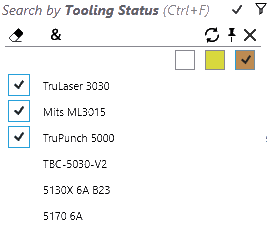

Filtro de biblioteca de piezas
Filtrado de piezas por estado de equipamiento

Seleccione el campo de búsqueda Estado de equipamiento para filtrar las piezas según su estado de equipamiento. El menú desplegable muestra los estados como casillas de verificación de color y máquinas donde el Blanco es
estado OK, el Naranja Error y el Amarillo Advertencia. El botón Aplicar todo (&) está habilitado en este caso para aplicar la condición del filtro a todas las máquinas seleccionadas.
| Filtro | Descripción |
|---|---|
|
Muestra las piezas que tienen al menos un error de equipamiento. |
|
Muestra las piezas que no se pueden cortar con la máquina TruLaser 3030. |
 |
Corte inviable: estas piezas no se pueden cortar en ninguna máquina de corte (tenga en cuenta la selección "&" aquí). |
|
Errores de plegado: no se pueden producir piezas ya que no hay útiles de plegado válidos. |
|
SOLO plegado basculante: estas piezas solo se pueden procesar porque hay un útil de plegado basculante válido. Esto no se puede hacer en ninguna de las prensas plegadoras. |


Filtrado de piezas por soporte de plegado

Seleccione el campo Soportes de plegado para buscar piezas por soporte de plegado.
-
El menú desplegable para este campo muestra una lista de los útiles de plegado. Seleccione un útil para encontrar la lista de piezas que utilizan este útil.
-
La lista de útiles en el menú desplegable se puede reducir escribiendo el nombre del útil, el tipo de útil (punzón, cuello de cisne, radio, etc.) y la descripción del útil.
-
Seleccione varios útiles y aplique el modificador TODOS (&) para listar todas las piezas que utilizan ambos útiles.
-
Seleccione una pieza y haga doble clic para abrir los detalles de la pieza y resaltar otros útiles utilizados en la pieza para TODAS las máquinas de plegado. La descripción del útil se actualiza con los detalles del soporte.
-
Haga doble clic en la máquina para resaltar los útiles de plegado utilizados en la pieza seleccionada para la máquina seleccionada.

Al colocar el ratón sobre el botón del filtro de soporte de plegado, aparece una tooltip con los iconos de los útiles seleccionados. Un corchete alrededor del recuento de útiles significa la condición de coincidencia «TODOS», mientras que el corchete pequeño significa la condición de coincidencia CUALQUIERA.

Filtrado de piezas por útil empleado
Esto es idéntico al filtrado basado en soportes utilizados, excepto por lo siguiente:
-
Los iconos de los útiles se dibujan en un tamaño proporcional (no exactamente proporcional).
-
Cuando la vista previa de utillaje está abierta, al mover el ratón sobre los útiles resaltados se resalta el útil correspondiente en el panel de vista previa.

Filtrado de piezas por estado
Las piezas de la biblioteca se pueden filtrar por estado ahora. Las opciones muestran una lista de TODOS los estados aplicables y, por lo tanto, cambian en función de la lista de piezas de la biblioteca y sus estados actuales. Elija Material faltante para enumerar las piezas en estado de material no resuelto.

Filtrado de piezas por códigos de error
En combinación con el estado y las Máquinas ahora se pueden utilizar Códigos de error específicos de útiles en la búsqueda por Estado de equipamiento.La imagen siguiente muestra el escenario de búsqueda: errores de sobrecarga de útiles para la máquina 5170 6A.

La lista de errores muestra los errores aplicables para la máquina y la selección de estado. Se actualiza en la máquina y cambia la selección de estado para que la búsqueda sea más precisa. Por lo tanto, si selecciona el estado de advertencia para una máquina de punzonado, solo se mostrarán las advertencias de punzonado disponibles en la lista de errores.
Filtro de estado suprimido
A menudo, los útiles de piezas se suprimen debido a una geometría o un grosor excesivos.El utillaje también se suprime si se deniega específicamente por una ruta CAD. JFY Plus muestra el motivo de supresión en la tooltip del utillaje. Además, estas piezas se pueden buscar utilizando la casilla Estado suprimido recientemente añadida en el menú de búsqueda Estado de equipamiento.